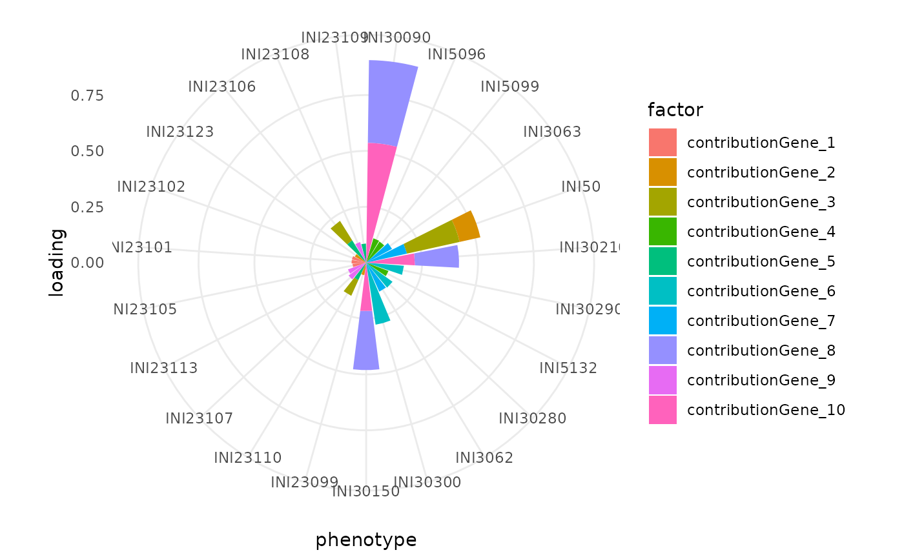

Create a radar chart of the phenotypes with the highest loadings for each reduction factor.
Create a radar chart of the phenotypes with the highest loadings for each reduction factor.
get_top_phenotypes( obj, metadata = NULL, reduction = NULL, n_phenotypes = 3, factors_plot = 1:10, invert_vars = FALSE, show_plot = TRUE, title = NULL, x = "phenotype", y = "loading", verbose = TRUE ) get_top_phenotypes( obj, metadata = NULL, reduction = NULL, n_phenotypes = 3, factors_plot = 1:10, invert_vars = FALSE, show_plot = TRUE, title = NULL, x = "phenotype", y = "loading", verbose = TRUE )
| obj | Seurat object or dimensionality reduction object. |
|---|---|
| metadata | Phenotype metadata.
Not needed if |
| reduction | Reduction to use. If |
| n_phenotypes | Number of top phenotypes per reduction factor to select. |
| invert_vars | Switch the axes of factors and loadings in plot. |
| show_plot | Whether to print the plot or simply return it. |
| title | Plot title. |
| x | x-axis variable. |
| y | y-axis variable. |
| verbose | Print messages. |
| seurat |
|
data.table of top phenotypes
data.table of top phenotypes
#> Error in get_top_phenotypes(seurat = DEGAS_seurat): unused argument (seurat = DEGAS_seurat)#>